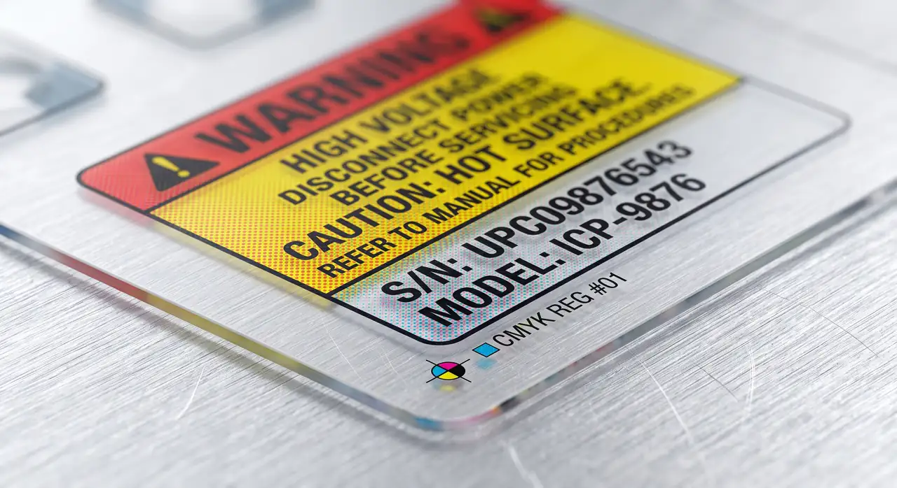

Validate
Review the specific object and surface before committing to a route.
SERVICE 02 / HARD-SURFACE TRANSFER
Decorative transfer printing for suitable hard-surface applications, always subject to surface validation before production.
START WITH THE APPLICATION
Every project starts by understanding where the print needs to live, what the artwork needs to communicate and which physical conditions shape the production route.

Review the specific object and surface before committing to a route.
Check artwork, placement and application requirements.
Move to production only after the project conditions are understood.
PROJECT ENQUIRY
Tell HDC what needs to be printed, its intended surface or material, your quantity and artwork status. Surface suitability for UV DTF is always reviewed before proceeding.
Request a quote